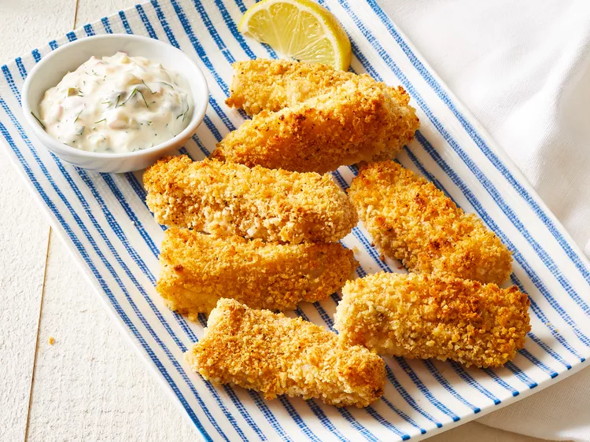

Homemade Fish Sticks

Description
These baked homemade fish sticks served with tartar sauce come out crispy on the outside and tender on the inside. You can use cod, halibut, or catfish fillets.
Ingredients
- White fish
- Salt and pepper
- Bread crumbs
- Old Bay seasoning
- Egg
- Water
- All-purpose flour
Steps
- Preheat the oven to 375 degrees F (190 degrees C). Line a baking sheet with parchment paper or use a silicone baking mat.
- Blot fish dry with paper towels. Season fish with salt and pepper. Cut filets crosswise in 1-inch strips.
- Combine panko and Old Bay seasoning in a shallow dish. Beat together egg and water in a second shallow dish. Place flour in a third shallow dish.
- Dip fish pieces in flour to coat, shaking off excess, then in egg mixture, then in panko. Place breaded fish sticks on the prepared baking sheet.
- Coat fish sticks generously with cooking spray. Bake freshly breaded or frozen fish sticks until golden brown, 18 to 20 minutes, turning once halfway through baking time.
- For Tartar Sauce, in a small bowl whisk together mayonnaise, pickle relish, onion, dill weed, capers (if using), and lemon juice. Chill at least 2 hours before serving and up to 1 week.
- Serve fish sticks with Tartar Sauce and lemon wedges.